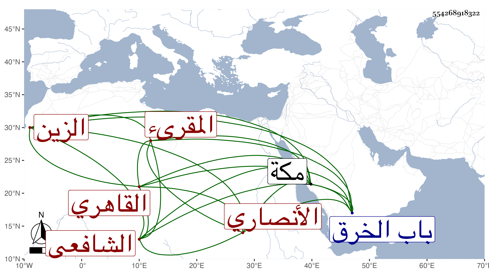

0902Sakhawi.DawLamic.ITO20230111-ara1.EIS1600.554268918322
Biography ID: 554268918322
663
عبد الغني بن محمد بن حامد بن محمود بن سليمان الزين الأنصاري القاهري المقرىء الشافعي ويعرف بابن القصاص . ولد سنة خمس عشرة وثمانمائة تقريبا بحدرة المرادنيين من باب الخرق ونشأ فحفظ القرآن والشاطبيتين واعتنى بالقراءات فتلا بالسبع إفرادا وجمعا على الزين عبد الغني الهيثمي وكذا لخلف ويعقوب وأبي جعفر ثم رفيقا للشهاب الزاوي على الشهاب السكندري سورة الفيل إلى آخر القرآن بالعشر وكذا تلا جانبا منه على الزين رضوان بل قرأ إلى آخر آل عمران بمكة على الزين بن عياش وبالوقف والابتداء لسورة لقمان فقط على الزين طاهر وقال له أحيا الله قلبك كما أحييت السنة والله لا يزول تمطيط قراء الجوق ونحوه إلا عند نزول عيسى ، واليسير على البرهان الكركي وقرأ المنهاج حلا على البدر حسن الاعرج وفي الفقه والعربية على قاسم الزبيري والجوجري وغيرهم وحضر عندي مجالس وطاف لقراءة الاسباع عند غير واحد بل قرأ رياسة في الختوم ونحوها ، وحج غير مرة واستقر به العلم بن الجيعان في تعليم الايتام بجامعه بالبركة والامامة به وتمول لكن نشأ له ولد فأتلف له شيئا كثيرا .
